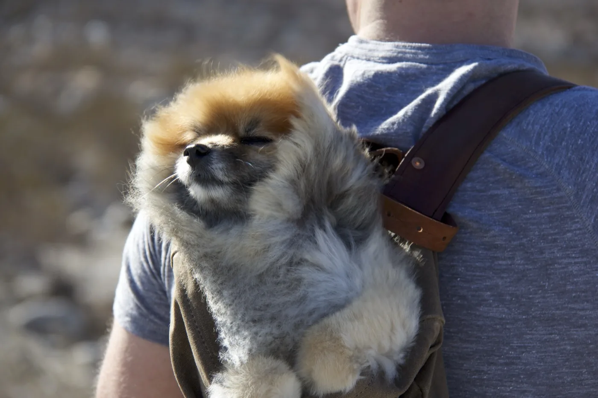
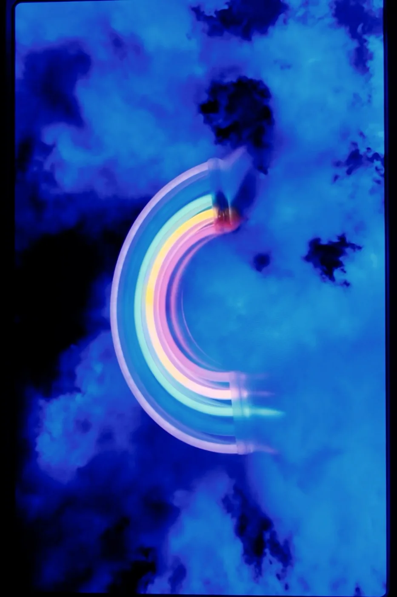
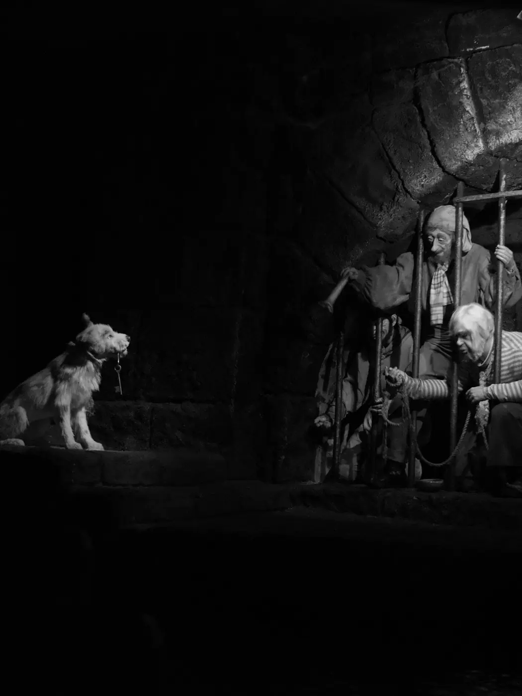
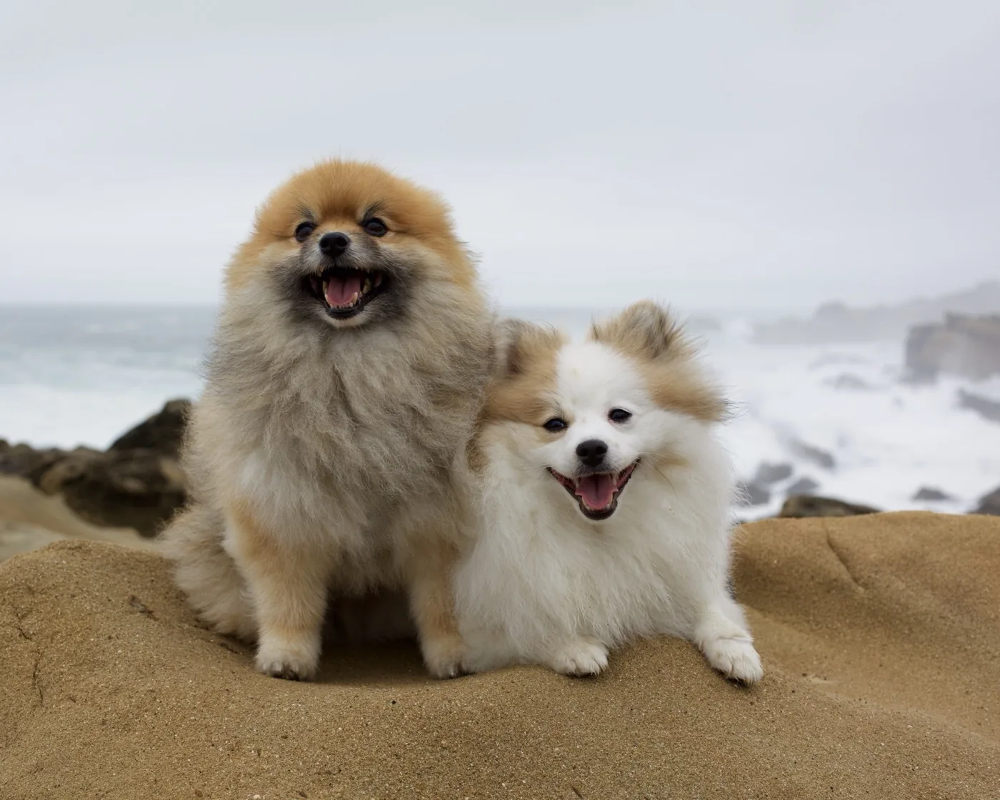
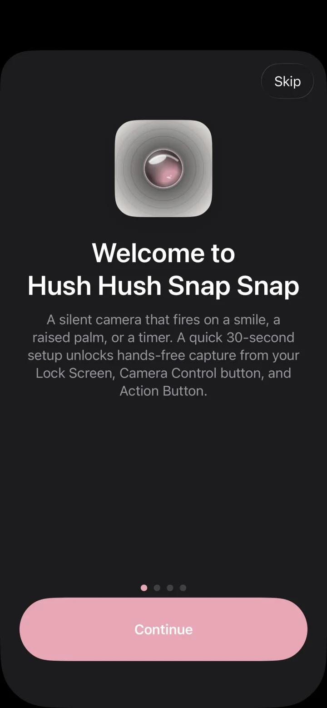
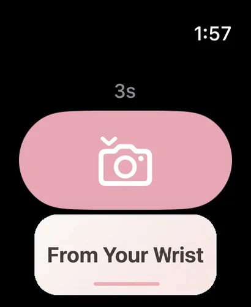
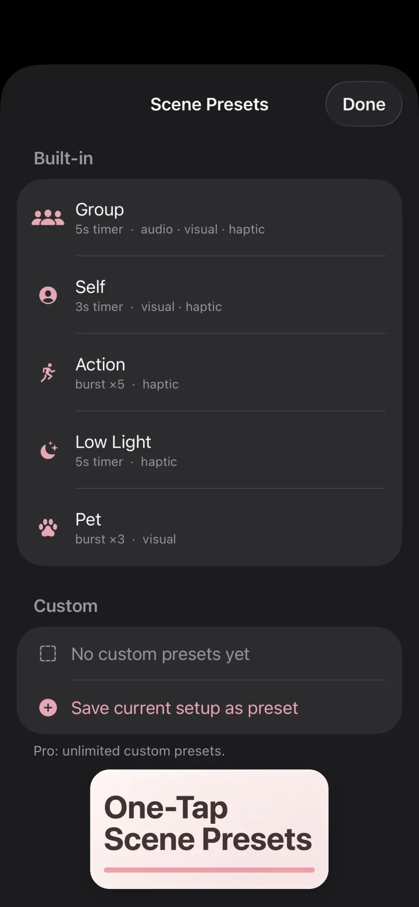

The quiet camera.
Hush Hush Snap Snap is a camera for iPhone built around one idea: the moment matters more than the shutter. It stays silent, dims itself for dark rooms, and fires from your wrist or the Camera Control button, so you can be in the picture instead of behind it. Underneath is a full manual camera with RAW, night modes, and cinematic video.
Requires iOS 26. Apple Watch companion optional (watchOS 11).
Free to download. Hushed Pro and Ultra Snapped unlock the manual camera, the smile, palm, and Auto Snap triggers, and the Snappy Kit.
Silent everywhere the law allows: in Japan and Korea the system shutter sound is required, so Hush Hush plays it, and the audio cue toggle shows a limited badge there.

Quiet when it matters.
Two free modes for rooms that must stay dark. Silent where the law allows, dark by design, so the moment survives the photograph.

Show Mode Free
Turn it on in Settings, under Column Buttons, and a chip appears beside the viewfinder. Engaged, it dims the screen, keeps the flash off, and captures several frames on every press, keeping the best. Built for concerts and live shows where you want the shot without lighting up the room. It tells you what happened on every press: still capturing, RAW took over, or a normal photo instead.

Dark Ride Mode Free
A monochrome viewfinder at minimum brightness, with the flash, the torch, and the screen flash all held off, for the rides and rooms where a glowing phone is the problem. Your brightness comes back the moment you leave.
The camera underneath.
Hushed Pro unlocks the whole camera: manual dials that drive the sensor, RAW, multi-frame night modes, cinematic video, and capture that frames itself.
- Manual Mode
- ISO, shutter, and focus dials that drive the sensor, plus white balance. RAW and ProRAW, with a live exposure histogram.
- Night
- Hush the Night Away fuses several handheld frames. Long Exposure and Astro are tripod modes for light trails and star fields.
- Video
- Cinematic and Spatial Video, slow motion, Steady Cam stabilization, and a video timer with auto-stop.
- Time
- Time Warp time-lapse with an adaptive Auto cadence, an intervalometer, burst after the timer, and hold-to-burst with Best-of ranking.
- Auto Snap
- Automatic capture that waits until the subject is framed the way you asked: face and shoulders, balanced, or full body.
- Finishing
- Depth Relight on LiDAR iPhones, Live Photo, Smart Titles and Albums, custom haptic patterns, and a local capture history.
120 / 240 fps slow motion, where the hardware allows it
Be in the picture.
Set the shot up, then step into it. A timer with three independent cues, eight ways to fire the shutter, and an Apple Watch that works as a remote. The rule-of-thirds grid, horizon level, Steady Snap, and a live stillness indicator keep the frame steady while you're in it.
Your cues. Your call.
The heart of the app, working right here: switch any cue off without touching the others, then run the timer.
Eight ways to say now.
- Wildlife: deer don't wait for shutter sounds
- Sleeping baby: the screen stays dark and the nap survives
- Quiet rehearsal: theaters, recitals, ceremonies
- Group photo: you're in it, not behind it, fired from your wrist

From the wrist. Free
Apple Watch is a true remote: scrub the duration with the Digital Crown, feel the countdown as gentle taps, and glance at a low-frame-rate mirror of the viewfinder before you fire.



Made for everyone.
Every accessibility feature is free, always. The three independent cues began as an accessibility decision: if you can't hear the count, feel it; if you can't see the screen, hear it. The whole app follows that rule.
See it, hear it, or feel it
Visual, audio, and haptic countdowns. Use one, two, or all three, and turn each off without touching the others.
VoiceOver and Dynamic Type
Full VoiceOver labels, values, and per-tick countdown announcements, and every completed capture is confirmed aloud. Dynamic Type up to AX5, the largest accessibility size, without clipping.
Every setting, honored
Reduce Motion turns every elastic animation into a crossfade. Reduce Transparency makes glass surfaces opaque. Differentiate Without Color conveys every state by shape and label. Increase Contrast adds strokes to every chrome surface.
Deep cuts.
The quiet features that make it a keeper.
Every lens remembers Pro
Switch to the tele and it's already ten seconds. Back to wide, three again. Each lens keeps its own timer, exactly where you left it.
The frame, described
With VoiceOver on, the app tells you how the shot is framed, left or right, high or low, near or far, before you take it.
One tap, whole setup Pro
Scene presets set the duration, cues, and lens at once. Save your own, or describe the shot and let Smart Scene's on-device intelligence build the preset for you.
Codes, safely
Point at a QR code and see where it really leads, the full destination with deceptive-link warnings, before anything opens.

The Snappy Kit.
A ring of sensor tools beside the shutter, opt-in from Settings. Every tool runs on your iPhone. Nothing is sent anywhere.
Free
- Text Grab. Point at text to copy, hear it read aloud, or save it.
- Fine Print. Magnify tiny text and have it read aloud, in bad light or up close.
- Transfer Hush. Send a photo to another phone by displaying it on screen, or hold up your camera to receive one.
Ultra Snapped
- Metadata Editor. See the location, caption, date, and credit stored inside a photo, and save a copy with anything you choose removed. The original is never changed.
- Calling Card. Photograph a business card to create a new contact.
- Unit Price Compare. Photograph two shelf tags to see which is cheaper per unit.
- Translate. Point at a sign or menu to read it in your language, beside the original.
- Receipt Splitter. Photograph a receipt to split it between people.
- Comp Shop. Photograph a barcode or product to find it at other retailers.
Transfer Hush, with no network at all
Send a photo to a nearby iPhone with no network, cable, or pairing: your screen shows a stream of colour codes at three per second and the other phone's camera reads them. Pick a photo size, follow the aiming guide, and watch the progress. Reduce Motion stops the codes and says so.
Private by design.
- No accounts, no third-party SDKs, no ads, no trackers, no advertising identifier. Your photos never leave your iPhone for Thomas Ray Publishing or anyone else.
- QR and barcode content is decoded on your device and never collected, and a scanned link never opens by itself, only when you choose, after you've seen where it goes.
- Analytics are anonymous and opt-out; turn them off in Settings and the buffer is purged immediately. Location, if you allow it, is embedded in the photo file only.
Free camera. Two upgrades.
Version 1.4.0 adds Show Mode, Dark Ride Mode, Manual Mode, Cinematic and Spatial Video, slow motion, Time Warp, Long Exposure and Astro, Steady Cam, and the Snappy Kit.
Free
$0, the everyday camera
- Full camera: every lens, zoom, flash, four aspect ratios
- 3-second self-timer with all three cue toggles
- Show Mode and Dark Ride Mode
- Grid, horizon level, Steady Snap, and the stillness indicator
- QR codes with a safety preview
- Snappy Kit: Text Grab, Fine Print, Transfer Hush
- Apple Watch remote, Lock Screen, Camera Control, AirPods, Volume Down
- Every accessibility feature, always
Hushed Pro
Every camera feature
- Weekly$0.99
- Monthly$1.99
- Yearly$7.99
- Every timer duration, with per-lens defaults
- Smile, palm, and Auto Snap triggers
- Burst, hold-to-burst with Best-of, intervalometer, Time Warp
- Manual Mode, RAW and ProRAW, histogram
- Hush the Night Away, Long Exposure and Astro
- Cinematic and Spatial Video, slow motion, Steady Cam
- Scene Presets with Smart Scene, Smart Titles and Albums, Live Photo, Depth Relight
- Custom haptics, capture history, advanced Watch features, barcode scanning
Ultra Snapped
Everything in Hushed Pro, plus the Snappy Kit. Lifetime never renews.
- Weekly$1.49
- Monthly$2.99
- Yearly$11.99
- Lifetime$19.99
- Everything in Hushed Pro
- Metadata Editor
- Calling Card
- Unit Price Compare
- Translate
- Receipt Splitter
- Comp Shop
- US App Store prices; the app shows the price for your storefront. Family Sharing on every plan.
- The 7-day free trial starts only when you tap Start 7-Day Free Trial. It gives you Ultra Snapped for seven days, asks for no payment information, and never turns into a charge.
- Subscriptions renew automatically unless you turn off auto-renew in your Apple Account settings at least 24 hours before the current period ends. You hold one subscription at a time. The Lifetime purchase never renews.
- Bought the one-time Pro unlock earlier? You keep it. It is honored at Ultra Snapped, with nothing more to pay.
- Hushed Pro and Ultra Snapped arrive with version 1.4.0.
Quiet down. Snap away.
Download on theApp StoreRequires iOS 26. Apple Watch companion optional (watchOS 11).
Free to download, rated 4+. Made by Thomas Ray Publishing.